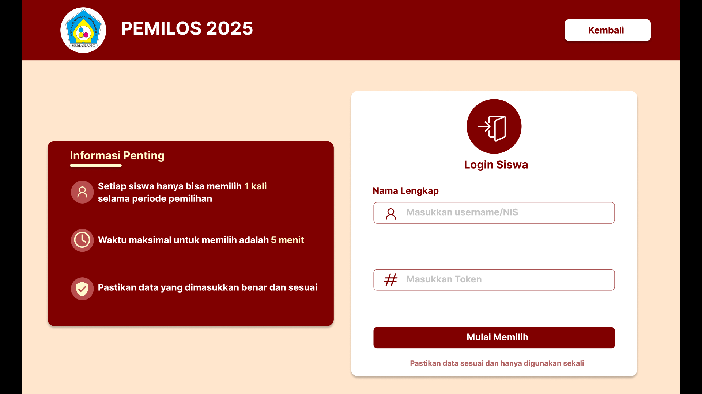

Saya berkontribusi dalam pembuatan UI/UX website Pemilos 2025 SMKN 11 Semarang, mulai dari merancang tampilan hingga alur pemilihan agar proses voting lebih mudah dan efisien.

Desain UI/UX sederhana untuk aplikasi e-commerce pemesanan makanan, dengan fokus pada kemudahan navigasi dan proses checkout yang cepat.